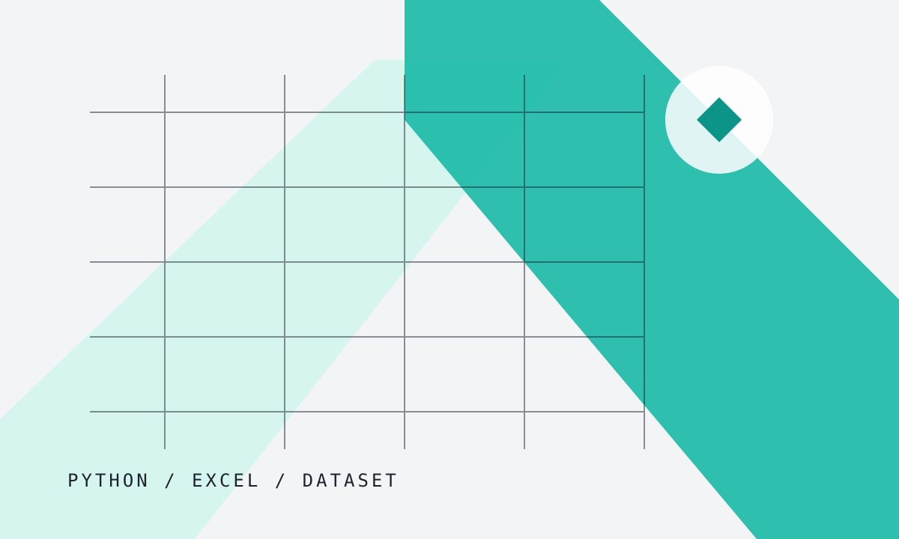

伪静态：让内容地址更清晰
一条链接也是知识库的一部分。为栏目和文章建立稳定地址，方便收藏、引用和长期维护。
Jquan4 分钟阅读


让地址表达内容层级
栏目与文章应该有各自稳定的入口。读者从搜索或收藏直接打开文章时，也应该能看见返回栏目和完整目录的路径。
先保证链接长期可用
修改标题时，尽量保持已有地址可访问。需要迁移时，将旧地址转向新位置，避免引用和收藏失效。
把导航当作内容来维护
为文章补充面包屑、所属栏目和相关内容。一个知识单元既要可以单独阅读，也要有继续探索的方向。
一条链接也是知识库的一部分。为栏目和文章建立稳定地址，方便收藏、引用和长期维护。
栏目与文章应该有各自稳定的入口。读者从搜索或收藏直接打开文章时，也应该能看见返回栏目和完整目录的路径。
修改标题时，尽量保持已有地址可访问。需要迁移时，将旧地址转向新位置，避免引用和收藏失效。
为文章补充面包屑、所属栏目和相关内容。一个知识单元既要可以单独阅读，也要有继续探索的方向。
FOLLOW THE THREAD

Python In Excel让一次字段更新，成为下一次可以直接复用的工作流。记录从读取、定位到结果验证的完整思路。
先把数据组织好，再让分析自然发生。从字段、类型和一小组样本开始，建立后续操作的共同底座。